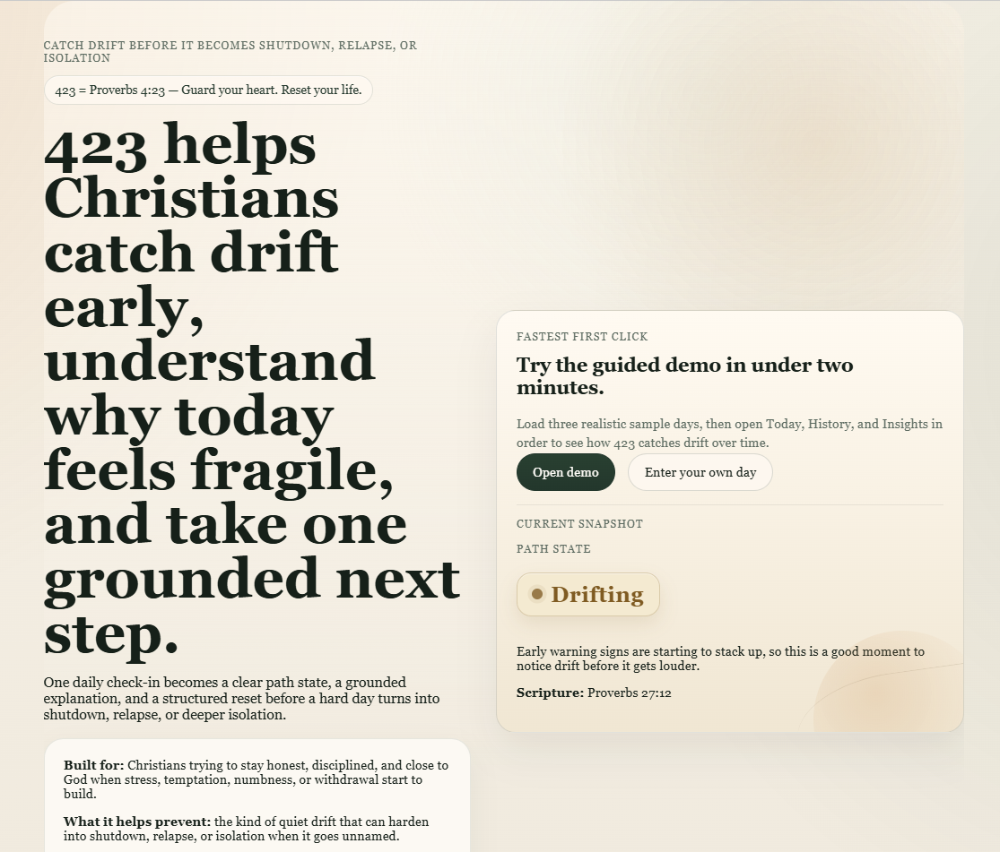
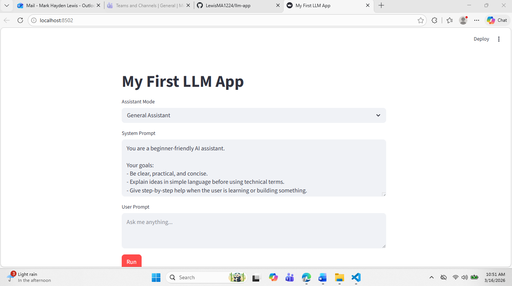

Technical Systems Analyst with enterprise banking experience, building Python automation,
QA tooling, dashboards, CLI utilities, and AI-assisted applications for real IT operations workflows.
Faith-aligned recovery check-in app that helps users catch emotional and spiritual drift early
and get a grounded next step before a harder fall. Built with a deterministic safety core and
bounded AI for note insight, scripture explanation, and suggested prayer.

423 / AI-guided Christian recovery and discipline check-in app.
Highlights: structured daily check-ins, path-state classification, local history,
deterministic safety guardrails, result-page insights, demo scenarios, and deployed FastAPI architecture.
Streamlit AI assistant using the OpenAI API with assistant modes, editable system prompts,
and clear error handling for missing API keys, rate limits, authentication issues, and network failures.

Streamlit AI assistant connected to the OpenAI API.
Python CLI toolkit for repeatable IT operations workflows, including log cleanup,
disk usage reporting, and CSV auditing. Emphasizes safe defaults, dry-run behavior,
validation, clear output, documentation, and operational usability.
GitHub Pages portfolio built to showcase Python automation, QA tooling,
dashboard applications, CLI utilities, technical skills, and professional experience.
Data / Dashboards: Pandas, Streamlit, CSV processing, reporting workflows
Tools: Git, GitHub, VS Code, ServiceNow, Dynatrace, Confluence
IT Operations: incident support, change validation, application support, ticket workflows
Experience
RBC Bank — Technical Systems Analyst
Support enterprise applications through incident troubleshooting, documentation, and operational support.
Perform UAT validation, change support, and issue documentation to help protect production stability.
Collaborate across teams to improve reliability, communication, and repeatable support workflows.
Awards: 2024 Q1 Leadership Award, 2024 Make A Difference Award.
What I’m Building Now
Currently focused on Python automation, QA tooling, dashboards, and IT operations utilities.
I am refining my public project portfolio around practical tools that support troubleshooting,
reporting, testing, and repeatable enterprise workflows.